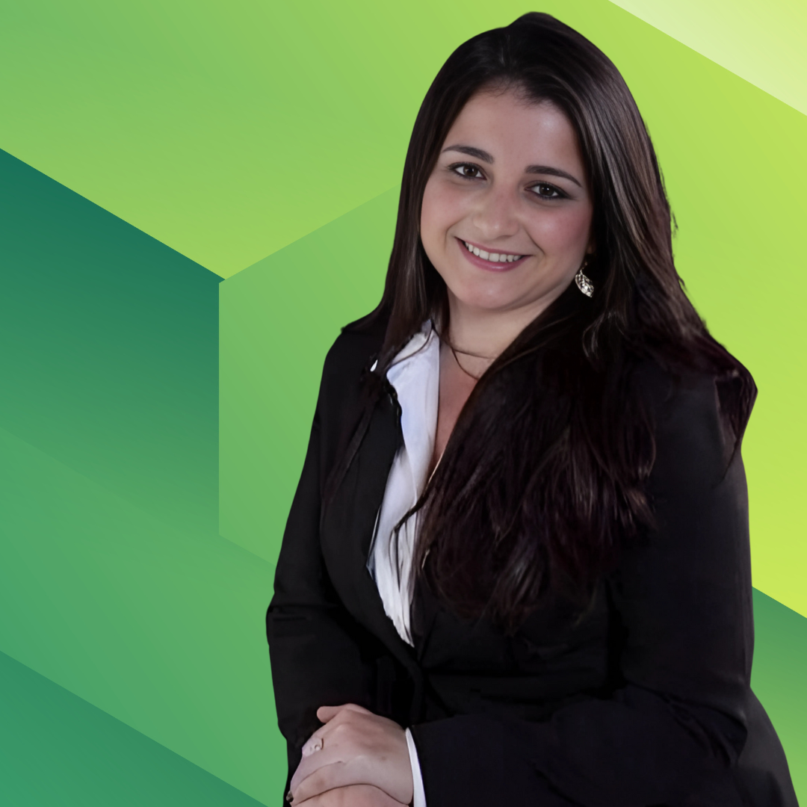

Nossos Serviços
Licenciamento Ambiental
Acompanhamento de condicionantes
Relatório anual de atividades potencialmente poluidoras (RAPP)
Plano de recuperação de área degradada (PRAD)
Plano de gerenciamento de resíduos sólidos (PGRS)
Plano de controle ambiental. (PCA)
Estudos ambientais
Registro de atividade florestal
Informação de corte
Transporte de resíduos classe I e II
Sobre a Consultora

Nome da Consultora
Experiência: 10 anos de experiência na área ambiental
Formação: Graduada em Engenharia Ambiental e pós-graduada em engenharia de segurança do trabalho
Contato: vanessa.licambiental@gmail.com